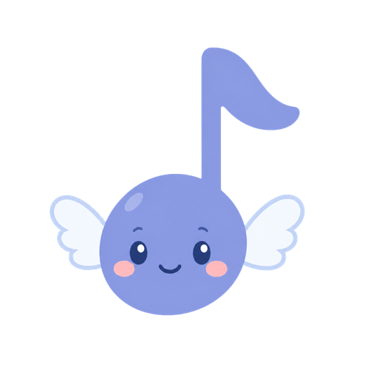

YouTube を見ながら弾く、ブラウザで開くだけのピアノ。
子どもが好きな曲の動画を流しながら、その場で鍵盤を叩いて練習する ——おもちゃのピアノと YouTube を並べてやっていることを、 タブレット 1 枚の中でやれるようにしたものです。
ブラウザで開けばすぐ弾けます。インストールもアカウントも要りません。 ピアノを始めたばかりの子どもが中心ですが、大人の初心者にも同じように使えます。
名前の「おとは」は漢字で「音羽」。アイコンの羽つき音符がその子です。 姉妹作に、ブラウザで開くだけのペイント いろは があります。
最初の一度だけ、大人が曲を登録します。
あとは子どもがサムネイルを押すだけです。動画が再生され、画面の下の鍵盤で弾けます。 検索の窓はあえて置いていません。 子どもが別の動画へ迷い込む入口を作らないためです。
共有 URL に「ここから再生」の時間が入っていれば、登録したときに一緒に覚えます。
| 見ながら弾く | YouTube の動画を出したまま、画面の下の鍵盤で弾けます。ピアノ・エレクトーン・オルゴール・ストリングスの 4 つの音。指を何本置いても鳴るので、和音も連打もできます |
|---|---|
| ゆっくりにする | 🐢 0.5／🚶 0.75／🏃 1.0 の 3 段階。遅くしても音の高さは変わらないので、そのまま鍵盤で合わせられます |
| くりかえす | 「A（ここから）」「B（ここまで）」を押すと、その間だけを何度も繰り返します。難しい 4 小節だけを回し続けられます |
| ここを おぼえる | 練習を始めたい位置を、曲ごとに何個でも記録できます。次に開いたときも残っています |
| 光る けんばん | 弾ける人がこの鍵盤で一度弾いておくと、押した鍵とタイミングが記録され、あとから音が鳴って鍵盤が光るお手本になります。動画を流しながら録れば、巻き戻しても繰り返しても遅くしても、お手本がぴたりと付いてきます |
| ろくおんメモ | マイクで録音できます。本物のピアノ・先生・お友達の演奏など、アプリの外の音を残して何度でも聴けます |
| おとあて | 音と「ドレミ」を むすびつける練習です。出たおだいの鍵を押すだけで、やめるまで続きます（タイピング練習と同じ形）。おだいは 💡光る → 🔤もじ → 👂音 → 🎼五線のおんぷ の 4 通りあり、ヒントを 1 つずつ外していけます。答えると ◎ か ✗ が出て、ひと呼吸おいて次の問題へ。「1 つでも まちがえたら おわり」にもできます |
| ドレミ | お手本から音名の並びを作り、再生に合わせてカラオケの字幕のように光らせます。紙に印刷もできます |
| メトロノーム | 速さは 30〜240、拍子は 2／3／4。テンポが分からないときは、曲に合わせて 4 回叩けば速さを測ってくれます |
文字には ふりがな を振ってあります。言葉づかいは大人向けのまま（録音・再生・繰り返し）にして、 代わりに絵文字を添えました。大人・小学生・幼児を 1 つの画面でまかなうためです。
「曲の音を解析して、自動で楽譜にする」ことはあえてやっていません。 技術としては可能ですが、バンドの曲では楽器を区別できず、 ピアノ以外の音が混ざった当てにならないお手本ができあがります。
代わりに選んだのが「人が弾いたものを記録する」やり方です。 誰かが一度弾けば、それは推測ではなく事実なので、音は必ず合っています。 ドレミの表示が正確なのも、この選択の副産物です。
「おとあて」が音名あてだけに絞ってあるのも、同じ考え方です。 弾きかた（指づかい・手の形・姿勢）には踏み込みません。 これは資格を持った人が作る教材ではないので、そこに口を出すと かえって妙なクセを付けかねないからです。教わるべきことは、人から教わるのがいちばんです。
その点「この音は ド」「ド はこの鍵」という対応は、誰から習っても同じことなので、 間違った覚えかたのしようがありません。ここが分かるだけで、弾くときの敷居はずいぶん下がります。 出題はその場で組み立てているので、曲を収録していません。
iPhone では全画面ボタンが出ません。iPhone の Safari が動画以外の全画面に対応していないためです（iPad・Android・パソコンでは出ます）。
登録した曲・練習の位置・お手本・録音は、すべてその端末のブラウザの中に 保存されます。こちらには送られませんし、置いておくサーバーもありません。 アカウントも要りません。
動画の再生には YouTube の公式プレイヤーをそのまま埋め込んでいます。 再生中は YouTube に接続するので、通信や表示のきまりは YouTube のものに従います。
ブラウザの履歴やサイトデータを消すと、記録も一緒に消えます。 録音した音は端末の中で少しずつ場所を取るので、要らなくなったものは消してください。
プロトタイプ（v0）です。仕様も見た目も、これから変わります。 作りは静的なページだけで、サーバーも API キーも使っていません。
ソースは GitHub にあります（MIT ライセンス）。 実装で決めたことは docs/v0-notes.md に残してあります。